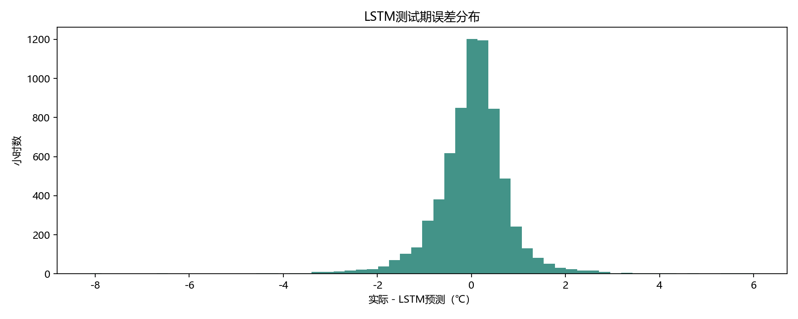

数据如何获取和整理
- 获取从UCI公开页面下载官方压缩包
- 选取12个站点中只使用官园站
- 提取保留时间及6个天气字段
- 输出清洗记录、统计图表与预测结果
分析季节与日内变化，再检验过去24小时气温能否帮助预测下一小时。
| 字段 | 含义 | 单位 | 用途 |
|---|---|---|---|
| year / month / day / hour | 观测时间 | 年 / 月 / 日 / 时 | 组成时间索引，检查连续性并分组统计 |
| TEMP | 气温 | ℃ | 天气分析、历史输入及预测目标 |
| RAIN | 降水 | mm | 按月份汇总降水 |
| PRES / DEWP | 气压 / 露点温度 | hPa / ℃ | 数据质量检查 |
| WSPM / wd | 风速 / 风向 | m/s / 方位 | 数据质量检查；不作为最终LSTM输入 |
原始文件还含污染物字段，本作业只使用天气字段。
| 时间 | 气温 / ℃ | 气压 / hPa | 露点 / ℃ | 降水 / mm | 风速 / m/s |
|---|
原始文件最早5条记录；NA表示缺测。
先检查时间、缺失和取值范围，再分别生成分析数据与预测样本。
| 字段 | 缺测数量 | 缺测比例 | 处理方式 |
|---|
范围核查：气温−60～60℃，气压800～1100hPa，降水与风速非负。本次未按预测误差删除峰谷。
均值只使用该字段的非缺测观测，并显示有效样本数；降水保留缺测，不把NA当作0。
输入气温只向前沿用最多3小时，24小时窗口仍缺则跳过。真实预测目标不填补，缺测时不评价。
| 时间 | 原始气温 / ℃ | 作为历史输入 / ℃ | 作为预测目标 |
|---|
自动选取首个连续气温缺测段及相邻记录。向前沿用只读取更早观测，不用后续值反向补齐。
以下为四年完整记录的描述统计；各字段按有效观测分别计算。
合并四年同月份的逐小时气温，计算月内观测均值。
按0—23点分组，比较各时刻平均气温。
先逐年按月汇总，再计算同月份四年的平均累计降水。
| 数据证据 | 对应设计 | 需要检验什么 |
|---|---|---|
| 使用近期气温与温差 | 能否优于“沿用上一小时” | |
| 图2显示各时段均温存在差异 | 加入小时周期，读取24小时 | 序列模型能否降低平均误差 |
| 图1显示明显季节差异 | 按时间顺序留出后续数据 | 模型在后续时期的误差有多大 |
描述图表提供设计依据，不直接证明预测有效；效果由未参与训练和选轮数的测试期检验。
预测为数据分析的延伸，使用LSTM与两种简单方法进行同条件比较。
| 方法 | MAE / ℃ | RMSE / ℃ | R² |
|---|
MAE表示平均偏差多少摄氏度，越小越好；RMSE对大误差更敏感；R²是拟合指标，不是预测准确率。
逐小时使用此前实际观测预测下一小时；曲线保留缺测断点，未平滑峰谷。
尚未揭晓


当前结论适用于本站历史数据的一小时预测。单站记录和一次时间留出检验，尚不足以说明其他城市、当前天气或更长预测时段的效果。